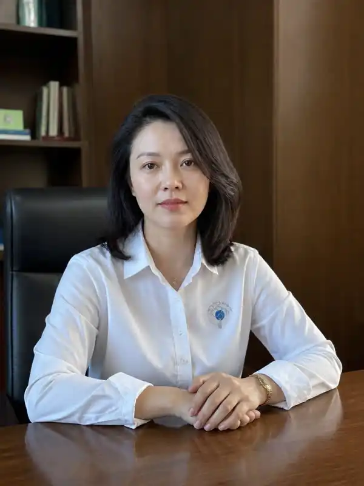

▍ 公开简介
解梦会创始人之一，解梦会现任会长兼常务理事。
作为解梦会的创始人，清瑶与其他常务理事相比，并没有非常突出的专业能力。但是在解梦会还未成立的过去，她就能通过敏锐的观察力看清怪奇事件的本质，提出初步的梦境理论，并将各领域的顶尖人物聚集在一起，实属是一项壮举。
▍ 负责领域
迎新与社群日常维护，线上例会与活动统筹，财务与物资管理，确立未来研究方向，官方合作与人员协调等。
搜集各种渠道获得的近期怪奇事件相关资料，初步筛选后在解梦会官网怪奇事件未解决栏目发布。听取最新怪奇事件的调查汇报，根据调查结果在怪奇事件已解决栏目进行归档，并与当地官方跟进最新进展。
对怪梦亲历者进行隐藏心理评估，发掘个人特长安排至适合岗位，创立地区调查小队等。
清瑶会长的本职究竟是什么，她私下里又究竟是个什么样的人呢？这可以说是解梦会成员们茶余饭后杂谈排行榜第一名的话题了。大家只知道加入解梦会后有这么一个会长的存在，平时也时不时会和这位冰山美人擦肩而过，开会的时候她只是用着平淡的语调说着未来的安排，却不知道她到底是因何契机创立的解梦会，又是怎么找到这么多各领域的奇能异士为她马首是瞻的。解梦会最擅长的就是解谜，可是自己的会长却成为了所有成员们心中最大的谜团。
“清瑶会长肯定是幼儿园老师！别看她平时冷冰冰的，我刚来的时候开心理辅导会，紧张得话都说不出来，是她紧紧握着我的手让我别紧张，这里就是我们这些人的避风港。你不知道她当时那个笑容，简直就是女神降临了！”
“你放屁她当时明明是对着我笑的，还有会长要能握着你的手我一会儿就从窗口跳下去。”
“你可别又做成一起怪奇事件了，不过清瑶会长确实，平时看上去冷冰冰的，其实心里比谁都挂念我们，我觉得她是能做我们妈妈的女人。”
“老东西老大不小了还在说这些恶心的话，清瑶会长做你女儿都够了。”
“你说什么死不要脸的再说一遍？”
“说就说。”
“你tm...”